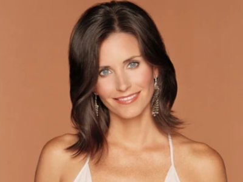
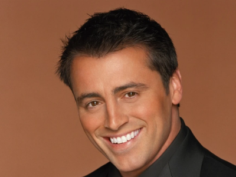
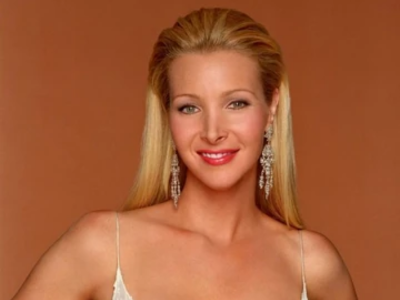

Oh My God! Could This BE Any More About "Friends"?
Welcome to the world where coffee doesn’t sleep, and neither do the laughs. "Friends," the show that taught us that it’s totally okay to eat a floor cheesecake and that "PIVOT" isn’t just a fancy term for dancers. For ten seasons, Monica, Ross, Rachel, Joey, Chandler, and Phoebe navigated the tricky waters of life, love, and late rent in New York City, giving us some of the most memorable moments and one-liners in TV history. Whether you’re here because you heard about the show from a friend or you’ve been a fan since you could spell 'transponster,' there’s always something new to catch up on with our six favorite pals.
The One With The Characters
Ever wondered who you’re more like? Are you a Monica, neat freak and all, or more of a Joey, where pizza is life? Get the lowdown on each of our favorite New Yorkers:
Ross Geller: Divorces, dinosaurs, and unagi. Ross might be our favorite nerd.
Rachel Green: From coffee shop waitress to fashion icon, Rachel is the definition of #goals.
Monica Geller: If you need tips on cleaning or competitive yelling, Monica’s your gal.
Chandler Bing: Could he BE any funnier? Spoiler: No.
Joey Tribbiani: Acting, sandwiches, and "How you doin’?" Enough said.
Phoebe Buffay: She’s quirky, lovable, and she probably knows more about your aura than you do.

 Ross Geller: Divorces, dinosaurs, and unagi. Ross might be our favorite nerd.
Ross Geller: Divorces, dinosaurs, and unagi. Ross might be our favorite nerd. Chandler Bing: Could he BE any funnier? Spoiler: No.
Chandler Bing: Could he BE any funnier? Spoiler: No.